The cruise ship I am on has very locked down computers
So I finally found the internet cafe on the cruise ship. I didn’t think they had one.
The computers look something like this:
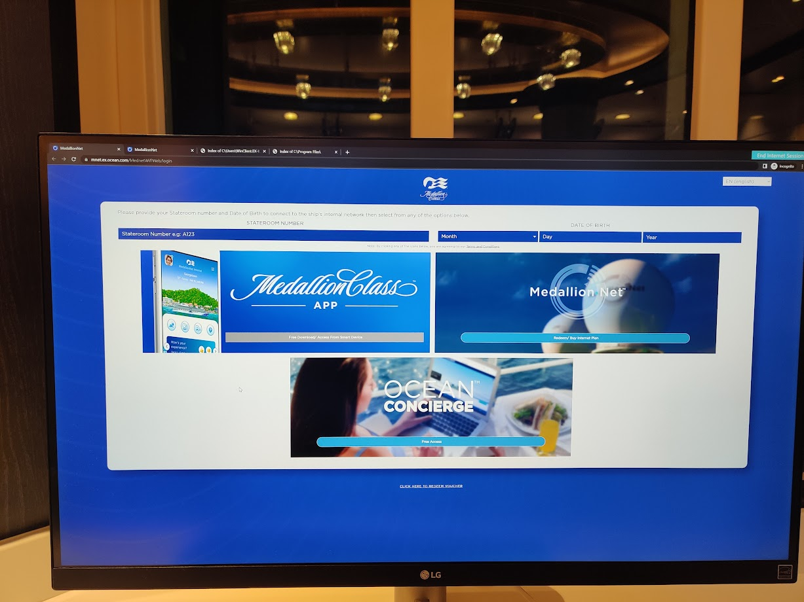
They have a keyboard, mouse and screen, but the rest of the machine was locked away, physically, behind the desk. I couldn’t get to it, and the cabinets were locked.
The only reason I know it’s windows is because all devices on this ship, including point of sale devices appear to be using windows. However, there is no taskbar, or windows UI visible, just a chrome browser in an incognito tab session, and a big blue “End Internet Session” button in the top right. When presses, this button completely resets the session.
So obviously, I decided to do some snooping around.
Can I get open task manager from the cntrl alt delete interface? :
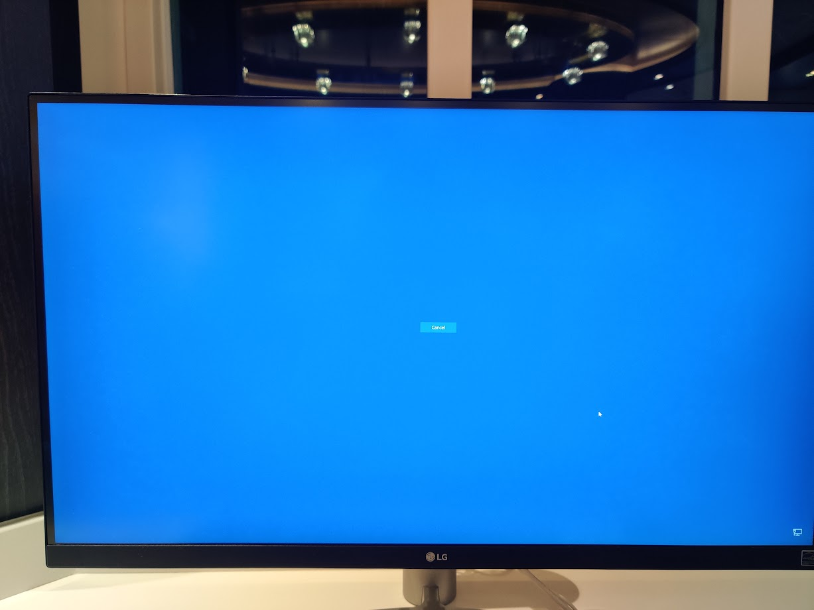
No, I can’t. But I can do other things.
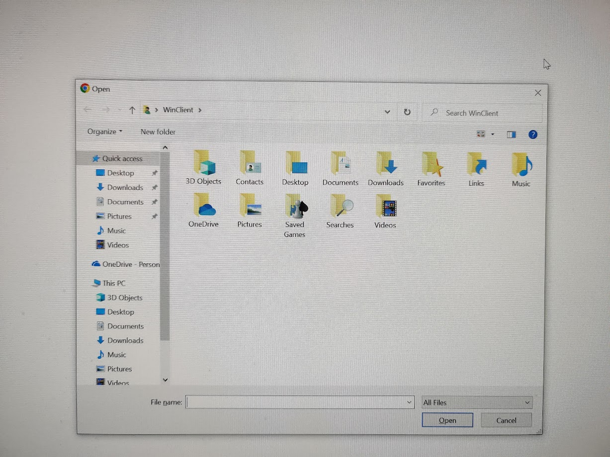
Control + O brings up the file open dialog, which lets me see the immediate user filesystem. Using this, I figured out the currently logged in user. Then, using chrome’s file:// dialog, I decided to do some browsing.
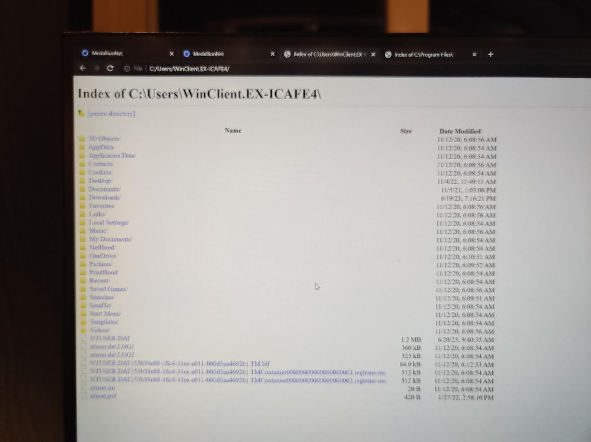
I went through all the directories of the currently logged in user, but I didn’t find anything of note. It seems like the reset of the seession deletes any downloaded files, or something like that.
However, I quickly discovered something more interesting:
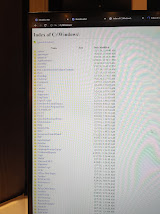
I could get to the C:/Windows directory, where the explorer.exe file was. Explorer.exe is the program that launches the windows UI.
But when I tried to click on it, chrome just downloaded it instead. But this was promising.
So I tried accessing the C drive through the “open file” interface that pops up when you hit Control + O.
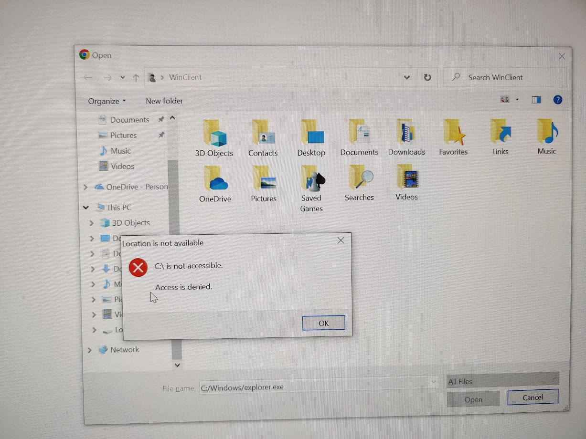
However, when I tried to access the C drive, I got an access denied. But if I put in the absolute path like so:
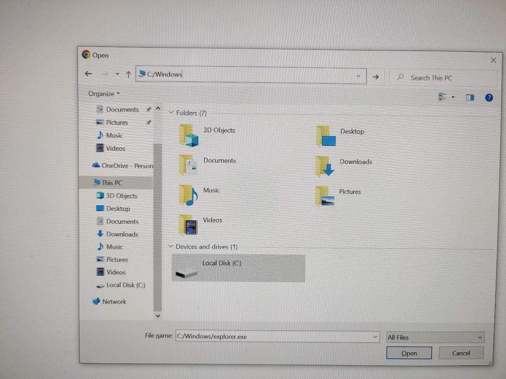
Then it worked:
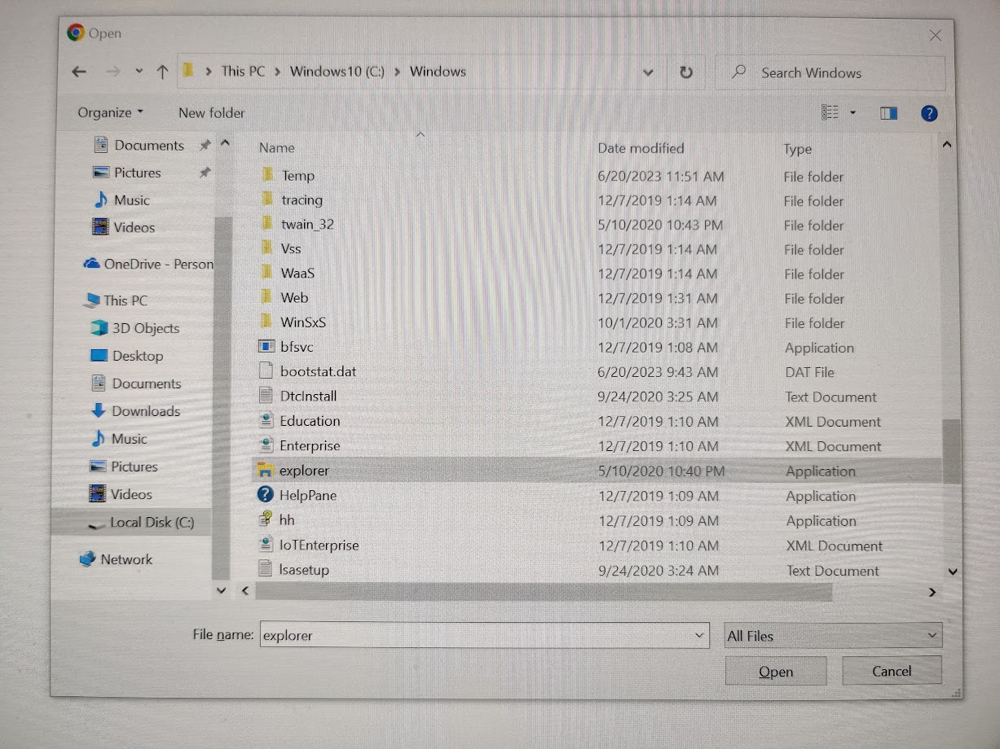
I right clicked on explorer.exe, and selected “open”. And I got the windows UI to launch.
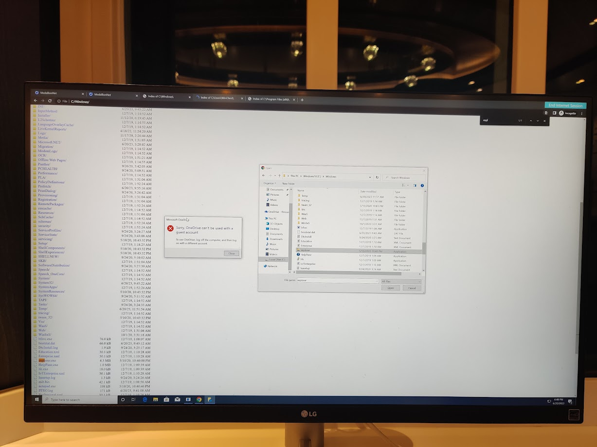
From here, I had broken out of the small box that I was locked in. But I decided to snoop around more.
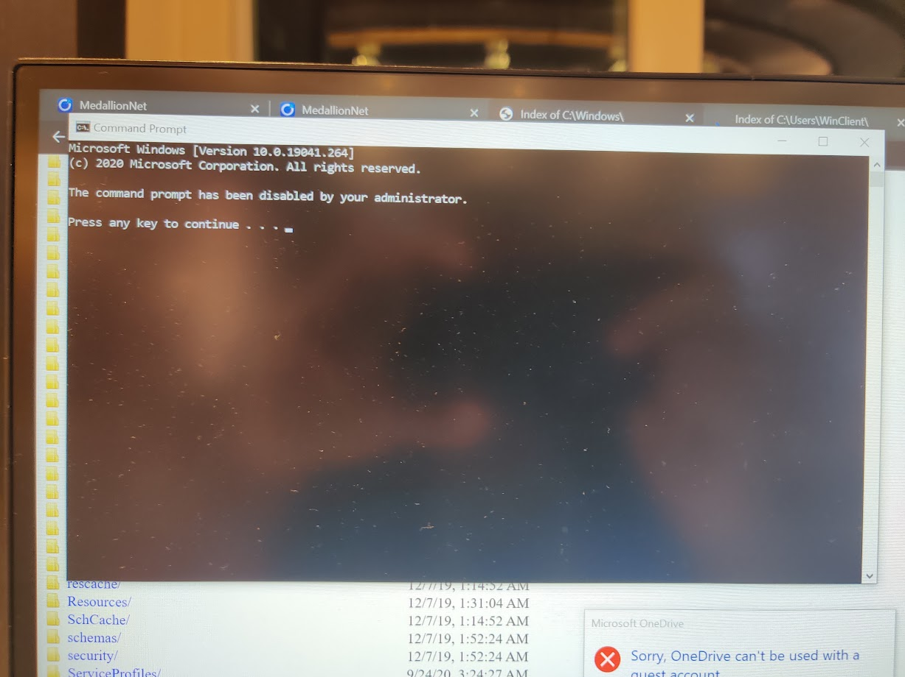
Aww, command prompt was disabled. Too bad.
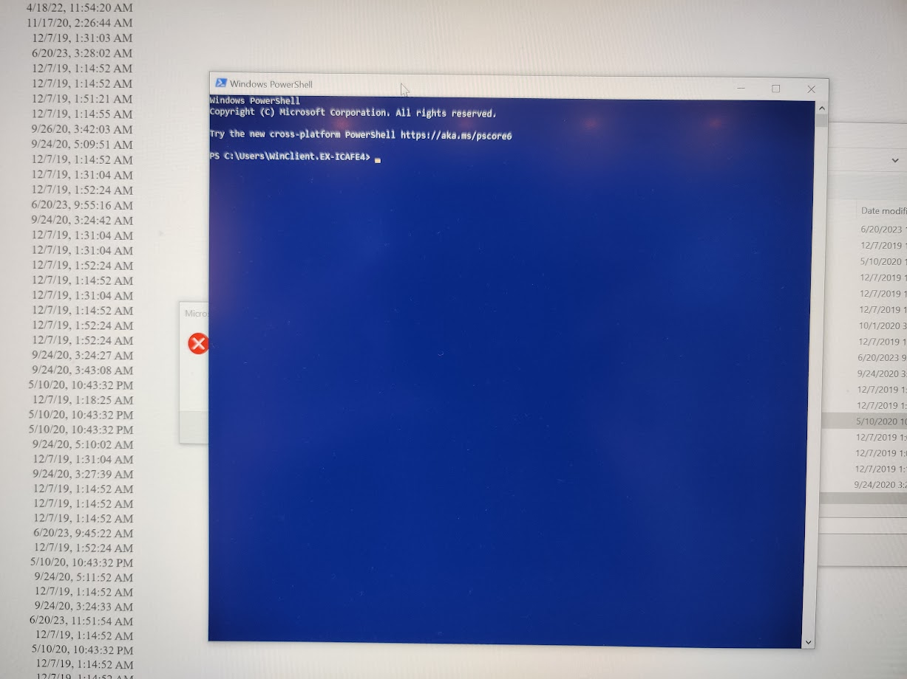
But powershell wasn’t.
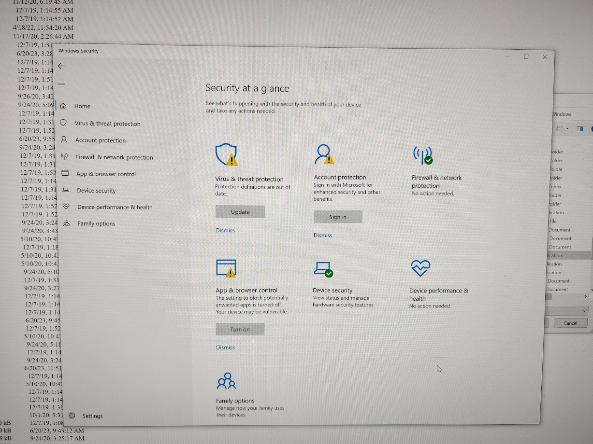
Windows defender was active, but it was complaining about virus definitons being outdated.
The settings app wouldn’t launch, it would close instantly. And attempting to launch control panel made erred as well, complaining about being disabled by the administrator.
So, I decided to use powershell to do further snooping around:
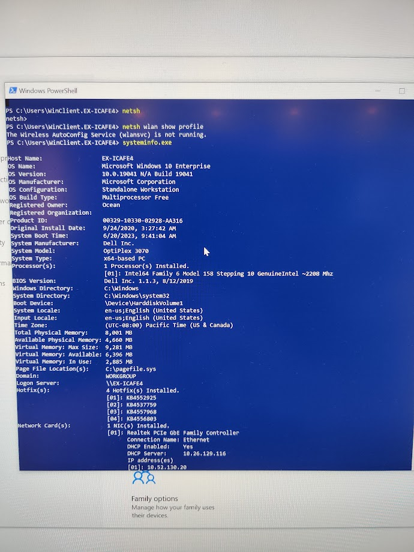
Wow, that is an old version of windows. It looks like they haven’t updated this system from when they first installed it in 2020 (It’s currently 6/24/2023 as I write this).
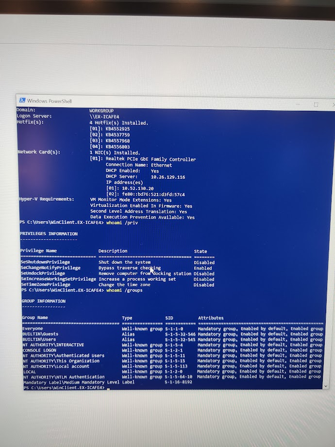
The whoami command tells a little bit about users and permissions. Looking at permissions, I notice something. The user I am logged in as is denied all permissions except one, bypass traversal checking. Bypass traversal checking allows users to visit lower level directories they haven’t been explicitly granted permission to go to, even if they are denied to higher level directories.
In this case, even though I have been denied access to the C drive, this singular permission enabled me to get into C:/Windows, and launch the explorer.exe program. This singular persmission created a security hole for me to crawl to.
Now, there are probably ways I can exploit this further. Since these machines are connected to the network, even if they aren’t connected to the internet, I could use an http server on another network connected device to send an payload to be executed on these devices, targeting a vulnerability not patched in this older version of windows. Or, since it is an older version of windows, there may be a easy exploit, something I could simply type into powershell.
I ended up not going any further. Ironically, I was pretty busy this vacation, between my other personal projects, and all the traveling.